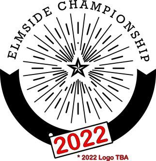

Elmside Championship 2022

Official team announcements on 27th January!
Come along for a night of elmtertainment including:
- Seeing if Charlie's improved at downing beer
- Marvelling at the random and fair team selection made possible with Elmbot
- An exclusive interview with 2020 winner Marcus Rumpus
...and of course finding your teammate for 2022!
(A live stream of team announcements will be available for those who can't attend)
2022 proves to have the most fiercly competitive line up yet with talented newcomers gaining valuable experience in the covid-hit 2020 competition.
Will we see the stranglehold the old guard have over the trophy finally loosen?
Or will they prove that youth and vibrancy is no match for cunning and a time-tested desire for greatness?
One thing that isn't in doubt is that 2022, the 5th Elmlympiad, is set to be a historic championship. Find out on January 27th who you will be fighting alongside in the pursuit of Immortality.
I bet you're craving some Elmside content while you wait for the 27th...
Why not go to the official Elmies subreddit and
fan wiki page to tide you over.